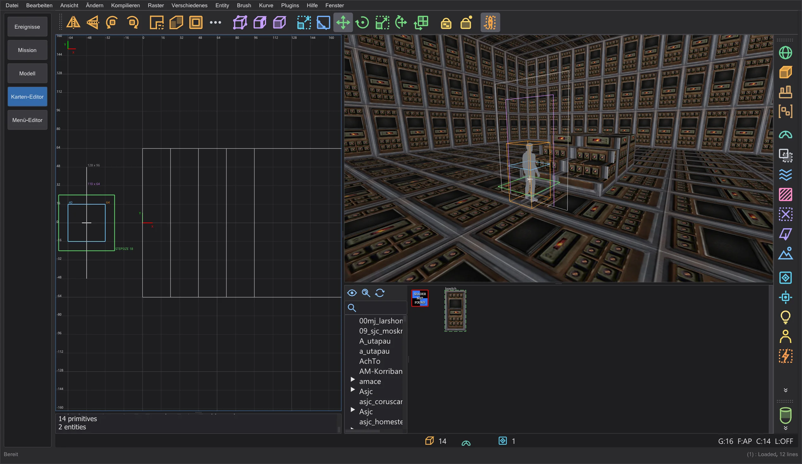
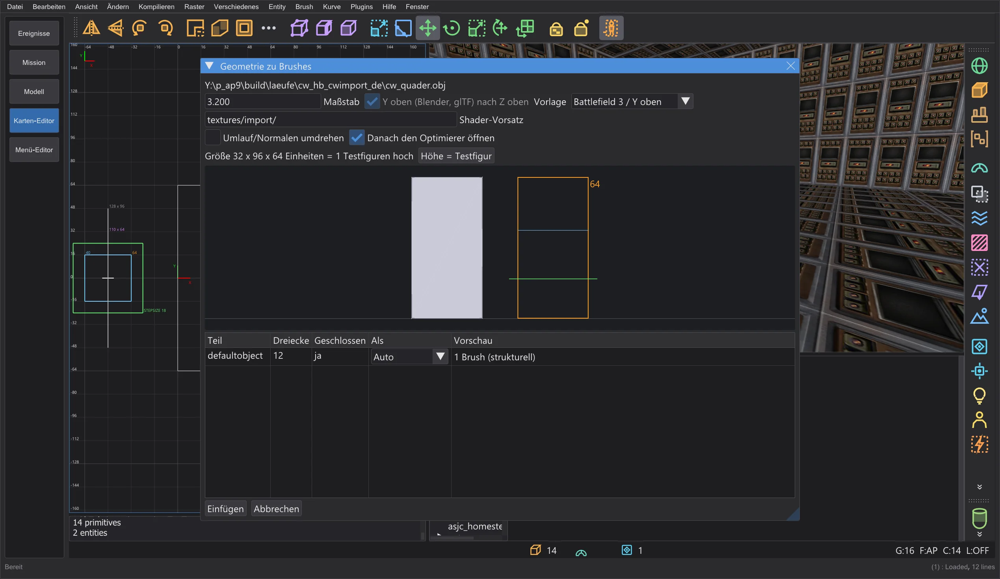
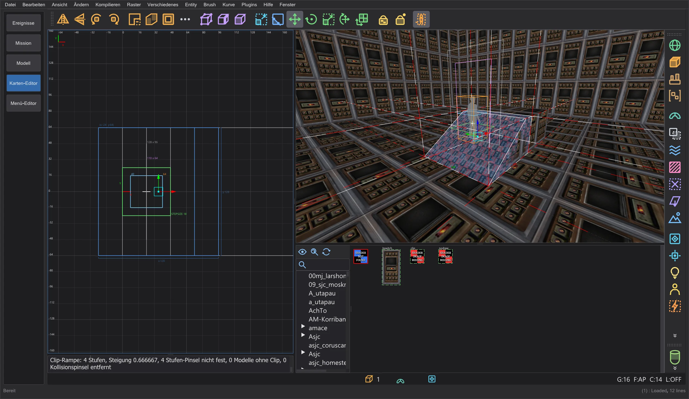

Karten-Editor: Testfigur, Maßstab und Clip-Werkzeuge
Werkzeuge aus den Anforderungen eines Clone-Wars-Mods: eine Spielfigur in Originalgröße, Modelle mit dem richtigen Maßstab und den richtigen Achsen importieren, Räume mit einem Vermerk in der Karte skalieren, glatte Kollision für Treppen und Wände. Alles ist ab Werk aus oder wirkt nur, wenn man es aufruft.
Testfigur#
Ansicht > Testfigur > Testfigur zeigen (F7 oder der Knopf am Ende der Werkzeugleiste) zeigt die Spielfigur in Originalgröße in den 2D-Ansichten und in der Kamera: den Kasten, den die Engine bewegt (32 x 32 x 64 im Einzelspieler und in Movie Duels, 30 breit im Mehrspieler; der Ursprung in Hüfthöhe, die Füße 24 darunter; geduckt liegt die Oberkante bei 16 statt 40 - OpenJK g_client.cpp und bg_public.h), die Marke STEPSIZE 18 über den Füßen, die andere Höhe und Rahmen für die Mindestmaße von Tür und Gang aus dem Optimierer. In der Kamera steht das Spielermodell des Spiels darin, in der Pose, die das Spiel im Stillstand zeigt (geduckt das gehaltene letzte Bild der Duck-Animation).

Shift+F7 stellt die Figur unter den Mauszeiger: in einer 2D-Ansicht auf die beiden Achsen der Ansicht (die Tiefe bleibt), in der Kamera mit den Füßen auf die Fläche. Ein Rechtsklick in einer Ansicht bietet Testfigur hierher, ein Rechtsklick auf den Knopf der Werkzeugleiste das ganze Menü. Ab Werk aus; die Wahl wird gemerkt.
Import mit Maßstab und Achsen#
Der Dialog von Datei > Geometrie importieren hat eine Vorlage: Vorgabe (wie bisher) liest die Datei genau wie bisher (ab Werk), Battlefield 3 / Y oben macht Y oben zu Z oben als (x, -z, y), Battlefront 2 / Z oben lässt die Achsen, Source / GMod (x 0,889) lässt sie und skaliert mit 64 / 72 (die Spielfigur ist im Source SDK 2013 72 Einheiten hoch, hier 64), Eigene Achsen lässt die Achse der Datei für X, Y und Z wählen. Umlauf/Normalen umdrehen ist für Modelle, deren Dreiecke andersherum laufen (Empire at War). Der Dialog zeigt die Größe in Einheiten und in Testfiguren, Höhe = Testfigur skaliert ein Figurenmodell auf 64, und eine Vorderansicht zeigt das Modell neben der Testfigur. Die Vorlage wird gemerkt; sie gilt auch, wenn man eine Datei auf eine Ansicht zieht.

Clip-Werkzeuge und die Ebene Collision#
Ändern > Clone-Wars-Werkzeuge (auch oben im Rechtsklickmenü einer Ansicht, wenn etwas gewählt ist) arbeitet auf der Auswahl, je eine Undo-Stufe:
- Treppe zu Clip-Rampe: eine Treppe aus Brushes oder ein misc_model wählen. Eine glatte Rampe aus textures/system/clip (Spielfigur und NPCs; Schüsse treffen weiter die Stufen) läuft durch die Vorderkanten der Stufen, von der Unterkante der Treppe bis zum obersten Tritt. Die sichtbaren Stufen verlieren ihre Kollision so, wie q3map2 es versteht: eine verdeckte Seite (caulk, sonst die untere) wird system/nodraw, das nicht fest ist, und eine nicht feste Seite macht den ganzen Pinsel durchlässig; ein Modell verliert seine Clip-Spawnflags; reine Kollisionspinsel der Auswahl fallen weg. Mit q3map2 gebaut läuft die Spielfigur ohne Stufensprünge hinauf; die Prüfung Sicht gegen Kollision des Optimierers meldet dort nichts. Eine Rampe, steiler als begehbar (MIN_WALK_NORMAL 0,7), bekommt eine Warnung.
- Glatte Clip-Wand (Ebene) / Glatte Clip-Wand (Hülle): eine unregelmäßige Wand wählen (Brushes, Patches oder ein misc_model). Die Ebene legt einen Clip-Quader entlang der Wand, dessen Vorderseite am Punkt liegt, der am weitesten vorsteht, auf der Seite der Kamera; die Hülle nimmt die konvexe Hülle der Auswahl.
- Raum skalieren: skaliert die Auswahl (einen Raum) mit einem Faktor um die Mitte der Auswahl unten; Punkt-Entities wandern mit, Modelle behalten ihre Größe. Ein info_notnull an diesem Punkt bekommt cw_scale (und cw_room), und die .map eine Kommentarzeile "// cw_scale ..." - nur Daten, Spiel und q3map2 übergehen beides. Skalieren und als Teil speichern speichert danach den Raum samt Marker als eigenes Teil (Datei > Auswahl speichern).
- Ebene Collision: die Clip-Pinsel dieser Werkzeuge - und von "Modell + Clip" mit dem Prüfprofil Clone-Wars-Kette - kommen in eine eigene Ebene namens Collision. Sie entsteht erst, wenn eines davon benutzt wird; Ebene Collision zeigen im selben Menü (oder der Ebenen-Browser) blendet sie ein und aus.
